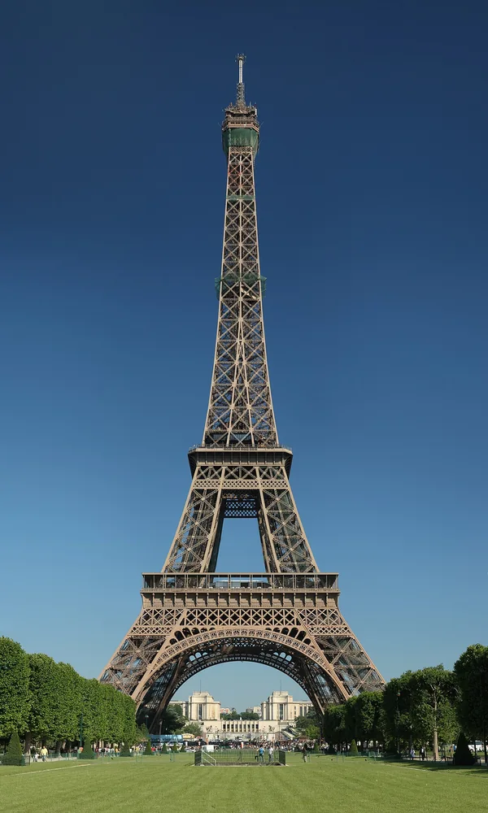
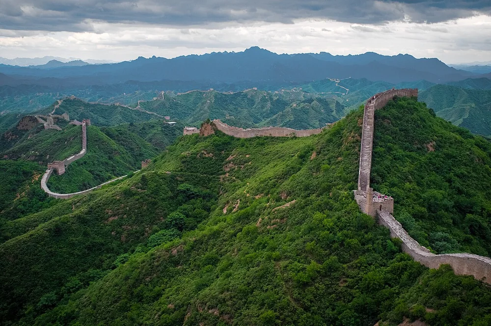
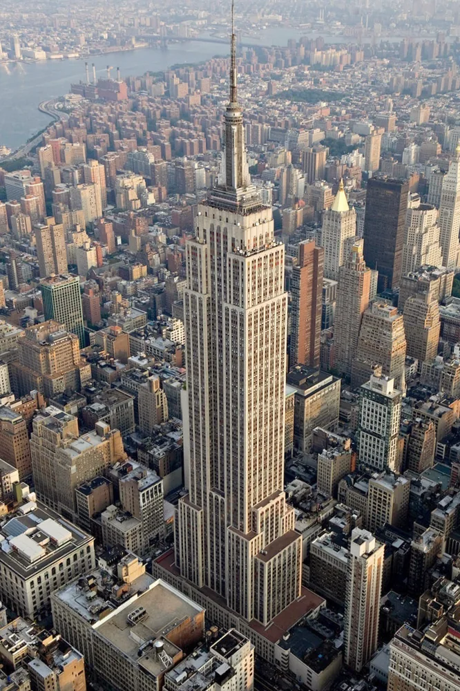
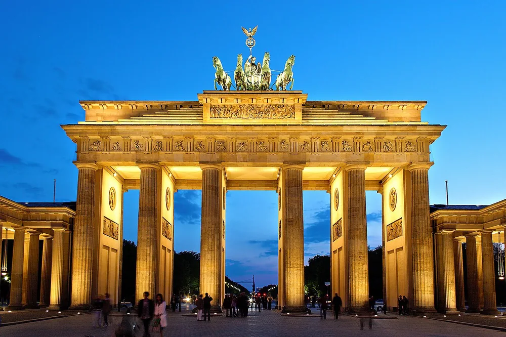
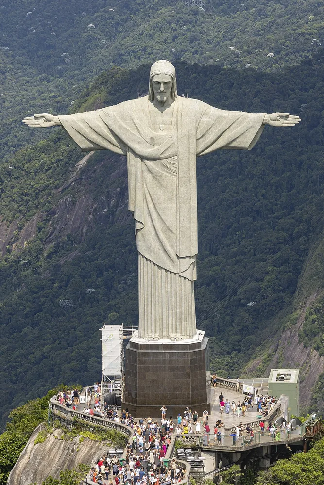
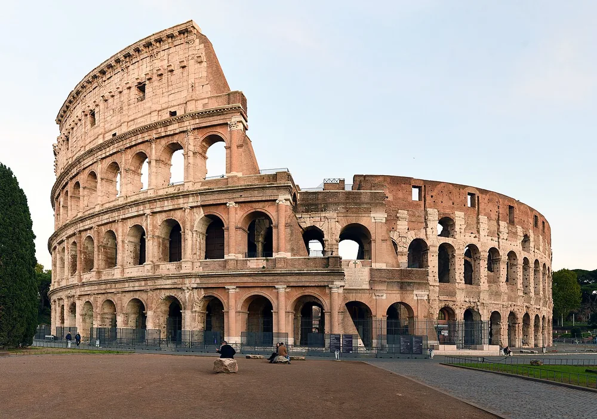
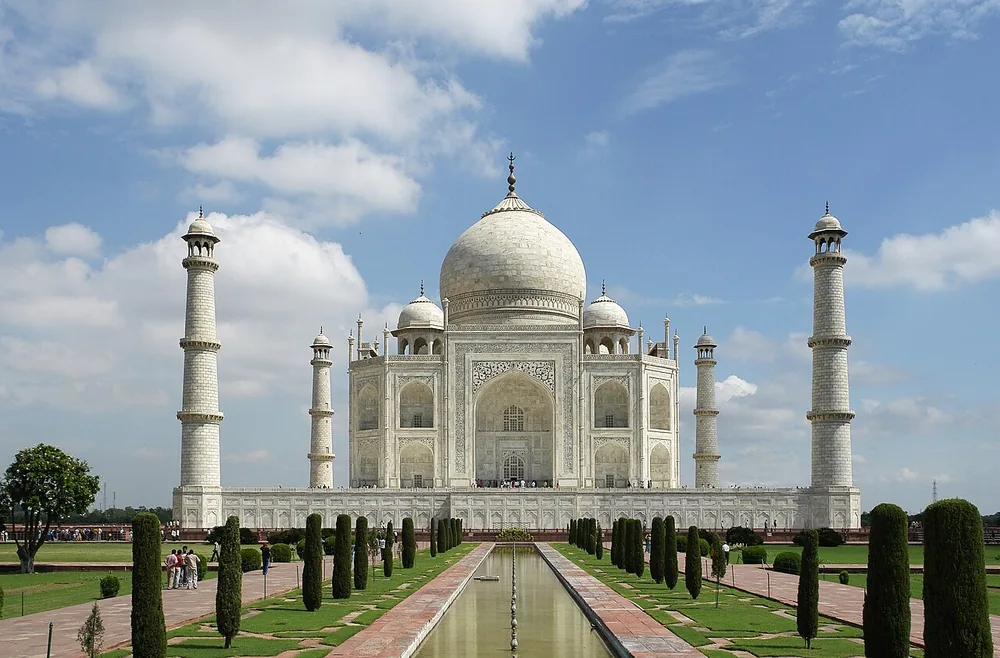
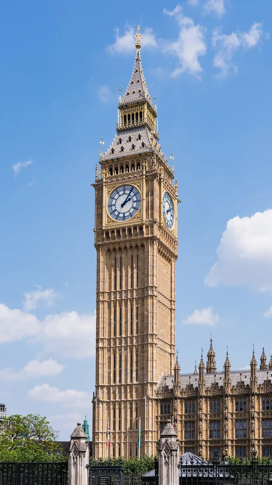
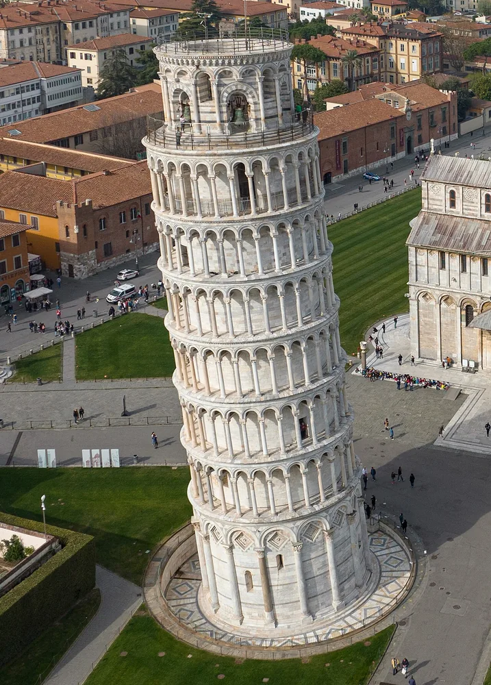
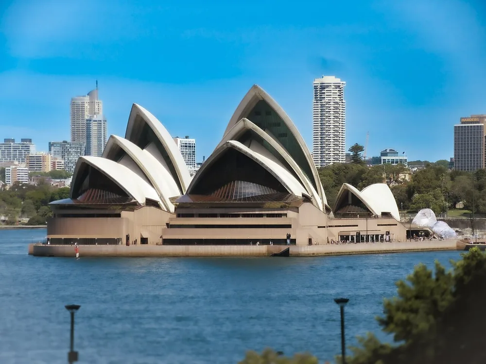

Photographs retain their individual licenses. Resized and converted to WebP; original framing preserved.

Eiffel Tower — Benh LIEU SONG. Source · CC BY-SA 3.0.
Great Wall of China — Severin.stalder. Source · CC BY-SA 3.0. Severin.stalder
Empire State Building — Sam Valadi. Source · CC BY 2.0.
Brandenburg Gate — Thomas Wolf, www.foto-tw.de. Source · CC BY-SA 3.0. Thomas Wolf, www.foto-tw.de
Christ the Redeemer (statue) — Arne Müseler. Source · CC BY-SA 3.0 de. Arne Müseler / www.arne-mueseler.com
Colosseum — FeaturedPics. Source · CC BY-SA 4.0.
Taj Mahal — Yann; edited by Jim Carter. Source · CC BY-SA 4.0. This file is not in the public domain. Therefore you are requested to use the following next to the image if you reuse this file: © Yann Forget / Wikimedia Commons
Big Ben — Christian David. Source · CC BY-SA 4.0.
Leaning Tower of Pisa — Arne Müseler. Source · CC BY-SA 3.0 de. Arne Müseler / www.arne-mueseler.com
Sydney Opera House — BAVhah. Source · CC BY-SA 4.0..jpg){kind=link}

.jpg){kind=link}


.jpeg){kind=link}